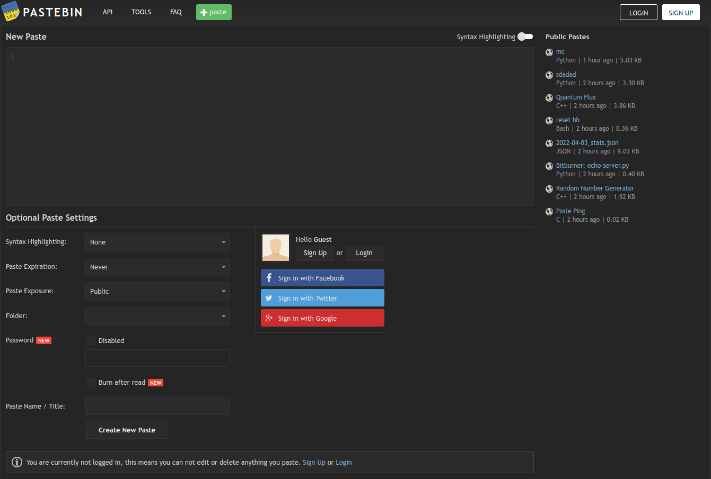

Recursos Interesantes Web
Pastebin
¿Qué es Pastebin?
Pastebin es un sitio web donde puede almacenar cualquier texto en línea para compartirlo fácilmente. El sitio web es utilizado principalmente por programadores para almacenar fragmentos de código fuente o información de configuración, pero cualquiera es más que bienvenido a pegar cualquier tipo de texto. La idea detrás del sitio es hacer que sea más conveniente para las personas compartir grandes cantidades de texto en línea.
Enlace al recursoBeneficios de Pastebin
Como se mencionó anteriormente, Pastebin es una de las herramientas preferidas por los desarrolladores principalmente por su sencillez, pero también se destaca en:
- Interfaz sencilla y amigable con el usuario.
- Admite archivos de texto grandes.
- Permite mantener el anonimato si el usuario utiliza una VPN.
- Una vez que crees una cuenta, es posible editar y eliminar los "pastes" creados.
¿Por qué elegimos Pastebin?
Pastebin es nuestra elección por ser una herramienta de uso frecuente en nuestra vida laboral.
Screenshots
Pagina Inicial
Vista de un paste público